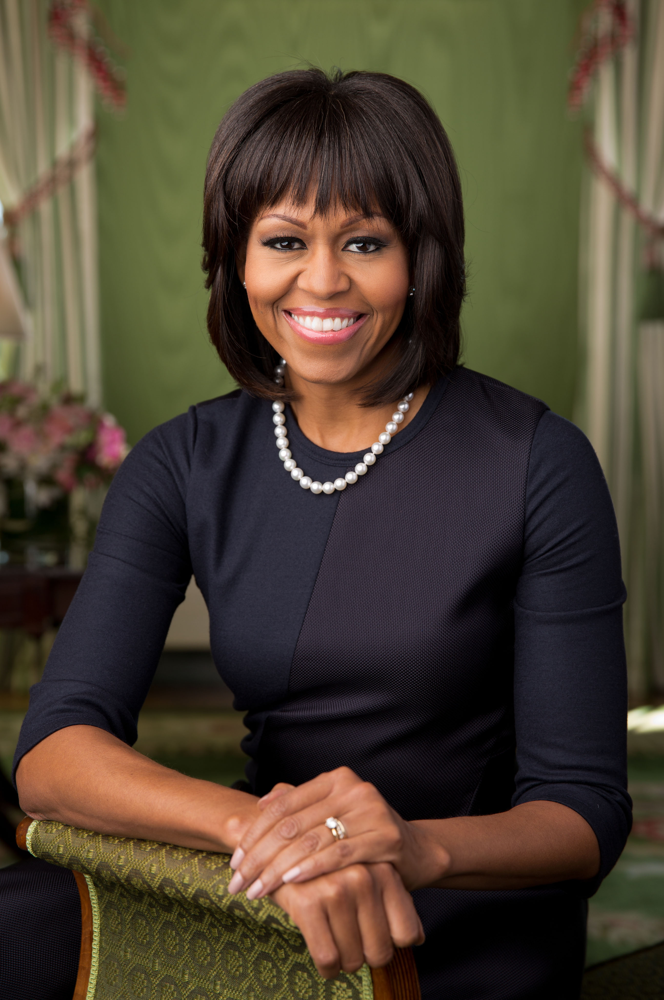

Michelle Obama
America's 44th first lady, married to President Barack Obama

Michelle Obama 2013 official potrait.
Chicago, Illinois, U.S. Michelle LaVaughn Robinson Obama (born January 17, 1964) is an American attorney and author who served as the first lady of the United States from 2009 to 2017. She was the first African-American woman to serve in this position. She is the wife of President Barack Obama.
Here's a time line of Michelle Obama's life:
- 1964: Born in Chicago, Illinois on January 17, Michelle Obama was born as Michelle LaVaughn Robinson. Her parents were Fraser and Marian Robinson.
- 1985: Michelle attended and graduated from the prestigious Princeton University. Upon graduation she said in her senior thesis that Princeton had made her more aware of her ‘blackness' than ever before.
- 1988: After leaving Princeton, Michelle began study at Harvard Law. She graduated in 1988 and went on to work in marketing and intellectual property law.
- 1989: While working at Sidley Austin, the marketing law firm she'd signed on with after Harvard, Michelle was assigned the training of a summer associate. His name was Barack Obama.
- 1992: After a few years of dating, Michelle and Barack were married. They married at the Trinity United Church of Christ in Chicago.
- 1998: Several years of marriage produced Michelle and Barack's first daughter, Malia Ann. Michelle would later give birth to their second daughter, Natasha.
- 2000: Michelle's husband Barack went campaigning for the U.S. congressional bid, which he eventually lost. They campaigned for several months, which Mrs. Obama says was not enjoyable.
- 2002: After leaving the Sidley Austin law practice in 1991, Michelle went on to work in community affairs in 2002. She worked for the University of Chicago Hospitals.
- 2004: After leaving the Sidley Austin law practice in 1991, Michelle went on to work in community affairs in 2002. She worked for the University of Chicago Hospitals.
- 2008: Senator Obama went on the campaign trail again, this time running for the presidency of the United States. Michelle Obama faced many attacks during this time, but the Obamas were victorious in the winning of the presidency.
- 2010: Mrs. Obama's first campaign as first lady was launched in 2010. The Let's Move campaign set out to reduce childhood obesity.
- 2014: As her husband's presidency grows closer to its end, Mrs. Obama continues her outreach work. Along with visiting homeless shelters and soup kitchens, the Obama women visited China where they met with Peng Liyuan, wife of the Chinese president.
"You may not always have a comfortable life and you will not always be able to solve all of the world's problems at once but don't ever underestimate the importance you can have because history has shown us that courage can be contagious and hope can take on a life of its own."
- Michelle Obama